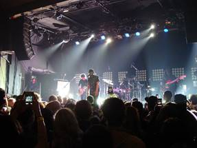
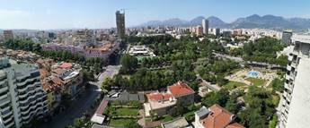

RINIA NË SHQIPËRI
Një revistë dixhitale mbi rininë shqiptare,
sfidat që përball, dhe
tema të tjera
interesante.
Problematikat kryesore në jetën
dhe arsimin e rinisë në vend. - Amantia
Padyshim që një plagë
e madhe e shoqërisë shqiptare mbeten problematikat që çdo ditë shqetësojnë
të rinjtë tanë. Shoqëria jonë hermetikisht e mbyllur prej vitesh
nga sistemi komunist pati shpërthime
pas prishjes së këtij sistemi duke thithur nga vetja
sjellje dhe problematika të pa dëgjuara më
parë. Shoqëria shqiptare u dend rrugëve të Europës
duke sjellë në Shqipëri të mira
dhe të këqia
për vendin që me vështirësi po mundohej të kalonte
periudhën e tranzicionit. Edhe përse ky
sistem ka vite që ka rënë dhe
jetojmë në një sistem demokratik
shoqëria dhe kryesisht rinia e ditëve të sotme
ka në vetvete dhjetëra problematika. Sociologët tregojnë shifra të frikshme
që të rinjtë
e sotëm I shoqëron një mungesë e madhe
optimizmi dhe dëshire për të
kërkuar dhe më pas për ta pasur
një punë. Sipas tyre shumica
e këtyre të rinjve preferojnë me së shumti të
konsumojnë kohën kafene se sa të
punojnë një punë me pagë relativisht
të vogël. Shqetësim tjetër që sociologët paraqesin
mbetet fakti që një numër
i madh i
të rinjve të shkolluar po largohet masivisht në shtetet që
kanë nevojë për fuqi punëtore.
Papunësia tek të rinjtë
e sotëm është një fenomen që
kërkon me të vërtetë vëmendje. Ky fenomen po bëhet një problem shumë shqetësues duke detyruar
moshën e re të emigrojë jashtë territorit tonë. Mungesa e vendeve të punës dhe
ndjekja e politikave të gabuara për
të siguruar një punë bën
të rinjtë të jenë pesimist
për një të
ardhme më të mirë në
vendi e tyre. Ndjekja e modeleve nga media, shpeshherë të ekzagjeruar duke reklamuar lukset apo jetën luksoze detyron
të rinjtë të ndërmarrin vepra
të rrezikshme për jetët e tyre.
Kafenetë e mbushura përplot me të rinjtë që
justifikohen me idenë se po
bëjnë diçka. Tymi i dendur
i cigareve dhe kafeina e qindra
makiatove që konsumohen çdo ditë në lokalet
tona duket se paralizon idenë e përpjekjes për të gjetur një
punë qoftë edhe me një pagë
simbolike. Ndjenja për të gjykuar
të tjerët është ngulitur fort tek një pjesë
e të rinjve tonë saqë ato
stepen dhe refuzojnë të ndërmarrin
iniciativa në komunitet apo të punojnë në punë
që sipas tyre në vendin
ku ata jetojnë
janë të rëndomta. Të dhënat nga pikat
kufitare të vendeve fqinje tregon një lëvizje
e madhe e moshës së re, ku ata
punojnë të gjitha punët e mundshme të cilat
siç thamë më parë refuzojnë
të punojnë. Detyrohen të shkelin
ligjet e vëna nga bashkimi europian
për të pasur
ca ditë punë më shumë.
Paragjykimet, kryesisht në zonat
rurale të vendit tonë i
detyron të rinjtë e këtyre zonave të mbyllen
brënda rrethit të paragjykimeve duke krijuar iluzione të paqena, më
pas duke u përballur me ndryshime drastike të përgjithshme
kur ato tentojnë
të dalin nga vendlindja e tyre. Po këto paragjykime e bëjnë pothuajse të pamundur
që të rinjtë
e këtyre zonave, kryesisht vajzat të shkollohen dhe
të investojnë në jetën e tyre. Sipas një studimi të
kryer nga organizata “Observatori për të drejtat
e fëmijëve” tregon se 2.9 %
e fëmijëve
të vendit tonë janë të
martuar. Theksojmë që martesat e hershme
janë problem i vazhdueshëm dhe i trashëguar në
vendin tonë. Shumë vajza në zonat
rurale paragjykimi i
mohon të drejtën për të
studiuar dhe familjet e tyre shohin si një
zgjidhje të detyrueshme mbylljen e tyre brenda katër mureve
të shtëpisë.
Libri dhe leximi
janë arma e vetme për të siguruar një
formim bazik tek çdo njeri
duke filluar që në moshën e vogël.
Të rinjtë në vendin tonë
lexojnë shumë më pak libra se ka lexuar brezi më
i vjetër se ne. Fatkeqësisht ky trend ka tendencë të rritet
duke u bërë një fakt shqetësues për shoqërinë tonë.
Interesi ndaj librit duket se ka rënë ndjeshëm duke bërë që teknologjia
të luajë rolin e saj. Të paktë janë ato
të rinj që
minimalisht kanë lexuar një libër
dhe me gishta numërohen ato që
frekuentojnë rregullisht bibliotekat tona që për ironi
të fatit janë më pak
se numri i lexuesve. “Ka krime më të rënda
se djegia e librave. Një ndër to është edhe
leximi I tyre” :- thotë Ray Bradbury, duke përshtatur realitetin ku ne bëjmë pjesë duket
se të rinjtë po bëjnë një “krim
të madh”. Nga një vëzhgim nga
gazeta “Republika” në bibliotekën kombëtare dhe në
libraritë e qytetit të Tiranës vihet
re një interesim shumë Ii vogël
i të rinjve
për blerë dhe lexuar. Këtë
e vërtetojnë vetë shitësit e librave dhe punonjësit e bibliotekave të cilët theksojnë se moshat 25-45 janë më të prirur
të lexojnë. Ndërsa një tjetër
e përditshme shqiptare si “Panorama” tregon se 60% e të rinjve universitarë
lexojnë 1-3 tituj në vit kryesisht të rekomanduar nga shkolla apo të “përmendur” nga mediat. Ky studim u bë nga
Shoqata e Botuesve për të kuptuar
qasjen që kanë të rinjtë
tek libri.
Të rinjtë e sotëm kanë një ndikim
të madh nga
teknologjia dhe
nga personazhet “Vip” që sipas tyre
bëjnë një jetë perfekte dhe
luksoze. Jeta imagjinare në rrjetet
sociale e të ashtuquajturve “Vip”a ndiqet çdo ditë nga
mijëra të rinj. Shpeshherë ato bëhen pre e rasteve negativë që këto
njerëz paraqesin duke bërë të rinjtë
që ekziston një jetë perfekte. . Nga jeta luksoze,
ushqimet e shtrenjta, pushimet në Maldive ,makinat
luksoze e deri tek mënyra e veshjes
dhe e sjelljes të rinjtë kopjojnë
këto personazhe duke u zhgënjyer nga realiteti
ku ata e gjejnë vete. Kjo
gjë sjell devijimin psikosocial dhe ndryshime të
shumta në psikologjinë e këtyre të rinjve duke mos pasur më
dëshirën e punës për të arritur
dalë ngadalë suksesin. Si pasojë këto të rinj
janë pesimist me punën dhe jetën
që ato bëjnë.
Makinat e shtrenjta, luksi, jeta e natës, droga
apo alkooli mbeten trendi “problem” për të rinjtë mbarë
botën duke mos përjashtuar këtu edhe vendin tonë.
Shkollat 9-vjeçare, gjimnazet,
rrugicat, lagjet, lokalet apo çdo vend ku ka të rinj
ka edhe përdorues të lëndëve narkotike,
alkoolit edhe të fenomeneve tjera
që realisht mbeten shumë shqetësues
për të gjithë
ne. Çdo kush që ka një fëmijë
në këtë moshë
me të drejtë shqetësohet për kohën dhe vendin
ku ato kanë
fëmijët e tyre. Fëmijë me prindër të pushtetshëm dhe me miq të
fortë i bëjnë
ballë mjaftë lehtë instancave të dobëta para tyre duke shkelur ligje, rrezikuar jetën e tyre dhe të tjerëve
pa u shqetësuar në asnjë lloj
aspekti. Banjot e shkollave,ambiente të mbyllura shërbejnë
si vend ku konsumohet lëndë narkotike nga një
grupmoshë e relativisht e
re dhe sipas një ankete 1 në
5 nxënës të klasave 9-vjeçare e kanë dëgjuar për lëndët
narkotike dhe 1 në 3 nxënës kanë
provuar të paktën një herë
një cigare apo alkol. Sipas Institutit
të Shëndetit Publik në bashkëpunim me YRBS (youth
risk behavior Surveillance) tek të
rinjtë e moshave 14-18 vjec rreth 5.4% e të anketuarve kishin
eksperimentuar me kanabis,
4% me ekstazi, 1.6% heroinë
dhe 1.4% kokainë. Rret 7% e të rinjve
janë përdorues të rregullt të
drogërave dhe kjo është një
shifër jo normale për një vend si
Shqipëria.
-”Më jep një milion
të të jap një diplomë apo 300 euro një provim” mbetet
togfjalëshi më i çuditshëm dhe
më i pa sens
që kohët e fundit sa vjen
dhe bëhet çdo ditë e më
i shpeshte. Çdo i ri
dhe jo vetëm ka hasur ose ka qenë
pjesë e një skene të tillë, duke neglizhuar leksionet dhe duke shpenzuar paratë
e prindërve të tyre për të
marrë një provim. Pedagogë që përfitojnë nga
ky fakt ndihmon
që cilësia pedagogjike të bie ndjeshëm. Nepotizmi në
demokracinë e sotme po merr përmasa të
mëdha duke lënë në mes të
katër rrugëve ato të rinj
që lodhen dhe përfundojnë fakultetet me rezultate të mira. Kjo
çon në popullimin
e zyrave të administrative
me të rinj me diploma të blera dhe
me mungesë të theksuara njohurish e rrjedhimisht shërbimi për qytetarët shpesh
ka nevojë për përmirësim. Cilësia e arsimit sipas ekspertëve
nuk është në nivelin e duhur
dhe ky është
një dhimbje koke e vazhdueshme për shoqërinë dhe
të rinjtë tonë. Po të bësh
një vëzhgim të thjeshtë në
qendrat e kurseve të gjuhëve të
huaja, veçanërisht në atë të
gjuhës gjermane vëmë re që të
rinj të shumtë kërkojnë të ikin jashtë
sepse vendi i tyre nuk
siguron një të ardhme të
mirë sipas tyre. Ikja e këtyre
elementëve përbën një problem shqetësues për vendin tonë.
Kjo valë ikje ka origjinën në papunësi dhe
sjell tek të rinjtë jo pak
pesimizëm. Mungesa e shpresës dhe motivimit
penalizon të rinjtë për të
marrë iniciativa të cilat do të
kishin ndikim në jetën e tyre.
Kontributi që ato mund të
japin në vendin e tyre duhet
ta japin në shtetet që ofrojnë
mundësitë më të mira për
ta.
Sporti është shpirti i
një shëndeti të mirë. Kafenetë
dhe teknologjia kanë zënë dukshëm
vendin e sportit duke bërë që shumë
të rinj të
ta braktisin atë. Vendi ynë të
jep mundësi të shumta për
të ushtruar sporte të ndryshme
të cilat nuk shfrytëzohen. Mungesa e investimeve në ndërtimin e kushteve sportive ka ndikuar që të rinjtë
të braktisin sportet. Shqipëria gjithmonë ka pasur talente dhe kampion
të cilët mëse nuk e kanë
gjetur veten jashtë kanë dështuar
si profesionistë. Kjo sepse vendi
nuk u siguron asgjë! Kafenetë mbizotërojnë në cdo cep të vendit
duke mos u lënë hapësirë për ambiente
sportive dhe edukative.
Problematika sa vijnë e shtohen
duke bërë që të rinjtë në
Shqipëri të kenë sfida të
mëdha. Problematikat shpeshherë kanë qenë të trashëguara
nga brezat e mëparshëm por nuk
mbeten pas edhe problematikat që janë relativisht të reja për
shoqërinë tonë. Problemet sociale dhe veçanërisht ato që prekin
rininë ekzistojnë në të gjithë
botën dhe problemet janë të ndryshme në
vende të ndryshme. Shqipëria ndryshe nga këto
vende të cilat ndërmarrin iniciativa serioze për zgjidhjen e këtyre problemeve reagon shumë pak
për minimizimin e tyre.
Ambicia e rinisë, shkollimi dhe karriera. - Bjorni
Shoqëria shqiptare ka shprehur vullnetin e saj të bëhet vend demokratik
ashtu si vendet e tjera perëndimore por, akoma në ditët
tona, kjo dëshirë dhe nevojë
nuk është realizuar, duke na lënë në një
fazë ndërmjetëse, që jemi mësuar
ta quajmë tranzicion. Në Shqipëri, me të vërtetë u rrëzua
rrëgjimi komunist këtu e një çerek
shekulli më parë, si dhe
u ndërrua fytyra e formës qeverisëse, por pak ndryshoi
modeli, duke mbetur në modelin e “vjetër”
në formën e të vepruarit dhe
të qeverisurit. E për këtë, fajtore
është klasa politike shqiptare.
Prandaj, krahas impenjimit me përkushtim në thellimin e reformave në vend, për të dalë
nga tranzicioni, vendi ynë ka nevojë
për një frymë
të re, për një mentalitet të ri qeverisës
të personifikuar me demokracinë moderne perëndimore. Frymën e re dhe mentalitetin e ri askush nuk
e përfaqëson më mirë se rinia, që po shkollohet duke marrë eksperienca të drejtpërdrejta akademike dhe jetësore
në demokracitë perëndimore.
Ne jemi ndër
vendet e pakta të demokracive perëndimore, ku rinia nuk ka asnjë
lloj roli në vendimmarrje, si dhe nuk
përbën forcën rinovuese të vendit,
po tenton të largohet nga atdheu.
Të rinjtë që kanë studiuar
duke investuar mundin e tyre familjet shqiptare,
me sakrifica dhe vështirësi të shumta
financiare, ku janë vlerësuar vlera të larta
intelektuale, me nivele të lakmueshme edhe
në fushën e formimit akademik, si dhe me aftësi
të jashtëzakonshme integruese në jetën
e shoqërisë së vendit, nuk vlerësohen
dhe përkrahen as nga
shoqëria as nga organizmat shtetërore.
Prandaj, kjo rini që
mbart vlera përparuese, zhvillimi dhe demokratizuese, duhet jo vetëm të vlerësohet, ashtu siç e meriton
nga politika dhe shteti shqiptar,
por edhe të përkrahet dhe
të mbështetet për t’i dhënë
hapësirat e domosdoshme, ku mund të
japë ndihmën e saj për të
bërë të mundur
daljen e vendit tonë njëherë e mirë nga tranzicioni
i stërzgjatur. Të rinjtë shqiptarë,
të shkolluar brenda dhe jashtë
vendit, nuk duhet ta lëmë fatin
e atdheut në dorën e një klase
politike të demoduar e jashtë mode, që nuk mbart
asnjë vizion modern në mënyrën qeverisëse
dhe në thellimin
e reformave integruese.
Duhet të jemi të
vendosur dhe të bindur se vendi
ynë meriton të jetë si
vendet e tjera në Europë, duke qenë të rinjtë
intelektualë ata që do ta çojnë Shqipërinë, atdheun e tyre në vizionin
e shekullit të ri, me ndryshim nga paraardhësit e tyre, të një
politike ndryshe, por sigurisht duke u përkrahur nga shoqëria
dhe opinioni mbarëpopullor.
Për mendimin tim, për
politikën shqiptare në përgjithësi, sindromi i mosrespektimit
të të rinjve
për t’u ingranuar
domosdoshmërisht për t’i dhënë kahje
pozitive ndryshimeve sociale, ekomomike dhe shoqërore, shqiptarëve të munduar dhe sfilitur
nga tranzicioni i stërzgjatur dhe
nga postulatet shterpë të bashkimit
me familjen europiane, është bajraktarizmi në politikë, kryesisht,
vazhdoi edhe në postdiktaturë, e vazhdon ende aktualisht.
Shembulli më tipik është opozita,
si e sotmja edhe e djeshmja, me projektoren e shablloneve shterpe të stigmatizimit
të çdo veprimi
politik, shtetëror e shoqëror të mazhorancës,
duke u rreshtuar në vargun e diskutimeve shterpe në parlament
ndaj çdo gjëje të qeverisë,
a thua atë e udhëhiqnin njerëz që s’dinë ç’është
shteti e pushteti, që shëmbëlltyra e drejtimit është vjedhja e korrupsioni, që nëpër ministri
drejtojnë të paaftit, etj.
Mendojmë se koha e ndryshimeve të lidershipit politik, duhet të jetë në
kohezion me përshtatshmërinë
e ndryshimeve social-politike.
Sovrani kërkon që në zgjedhjet
e përgjithshme parlamentare
të viteve të ardhshme t’i
kenë vëth në vesh të
metat dhe gabimet e së kaluarës.
Ato po u përsëritën, ndëshkimi do jetë i patjetërsueshëm.
Kryeqyteti Europian i rinisë. - Ergis
Tirana u shpall “Kryeqyteti Europian i Rinisë” për
vitin 2022, duke triumfuar
pas një gare goxha të fortë
me 4 qytete të tjera finaliste si; Baia Mare (Rumani), Kazan (Rusi), Poznań (Poloni) dhe Varaždin (Kroaci).
Vendimi u dha nga një juri
e specializuar me përbërje të përfaqësuesve nga organizata dhe institucionet më të rëndësishme
europiane si; Parlamenti Evropian, Kongresi i Autoriteteve
Lokale dhe Rajonale të Këshillit
të Evropës, Këshilli i Rinisë
i Këshillit të Evropës etj.Momenti kur Tirana u shpall Kryeqyteti Europian i Rinisë
për vitin 2022 ishte i papritur,
i mbushur plot emocion edhe për
delegacionin shqiptar që kryesohej nga
kryebashkiaku Erion Veliaj. Stafi i
Bashkisë së Tiranës punoi për
më shumë se një vit për suksesin
e djeshëm. Tirana u vlerësua
për fokusin tek të rinjtë,
duke filluar nga ata më të
vegjlit, me çerdhet, kopshtet, shkollat, këndet e lodrave etj.
Çfare do të thotë të
jesh një kryeqytet europian i rinisë?
Tirana është qyteti
i 14-të që fiton çmimin “Kryeqyteti
Rinor Europian”. Ky është një çmim
vjetor që i jepet një
qyteti europian, dhe nuk është
thjesht një trofe. Përgjatë një
viti qyteti fitues bëhet qendra
e gjithë aktiviteteve rinore dhe merr
një vizibilitet të jashtëzakonshëm. Për një vit, Tirana do jetë Kryeqyteti Europian i Rinisë,
çka do të thotë shumë projekte,
shumë aktivitete, një promovim i
jashtëzakonshem i Tiranës dhe Shqipërisë,
dhe shumë mundësi për të
rinjtë tanë për t’u organizuar
dhe lidhur me gjithë rrjetet rinore europiane.
Kryeqyteti i rinisë për
pjesëmarrje dhe mbajtja e titullit “Kryeqyteti Europian i Rinisë” ka kontribuar
në rritjen e angazhimit të të
rinjve në proceset e vendimmarrjes përmes strukturave të ndryshme duke lidhur kështu më
mirë të rinjtë
me autoritetet lokale.Çfarë
synon programi i “Kryeqyteti Europian
i Rinisë”?
Nëpërmjet aktiviteteve që do të organizohen program ka si qëllim: Krijimin
e mundësive të reja;
Të sjellë ndryshime pozitive; Inkurajon pjesëmarrjen aktive; Promovon vullnetarizmin; Nxit identitetin evropian; Mbështet larmishmërinë dhe përfshirjen; Forcon organizatat rinore; Rrit investimet në rininë; Përforcon
zërin në Evropë; Shndërron qytetin në një
pikë takimi ndërkombëtar; Lidh të rinjtë mes
tyre.
Qyteti i parë që e ka fituar
këtë cmim është Roterdami në 2009. Pastaj me radhë: Torino (Itali), Antëerp (Belgjike), Braga (Portugali), Maribor (Sllovenia), Selanik (Greqi), Clunj Napoca (Rumani);
Ganja (Azerbaxhan), Varna (Bullgaria),
Cascais (Portugali), Novi Sad (Serbi);
Amiens (France).
Shëndeti mendor i adoleshentëve dhe të rinjve. - Klevis
Problemet e shëndetit mendor “mund” të shfaqen
në fëmijëri dhe në fund të
adoleshencës së hershme. Studimet e fundit kanë identifikuar
probleme të ndryshme, në veçanti
depresionin, si shkaktarin kryesor të sëmundjeve të
ndryshme tek të rinjtë. Shëndeti
mendor (i dobët) mund të
importojë efekte mbi zhvillimin e adoleshentëve dhe shëndetit më gjerë
apo lidhja e tyre me rezultatet e ndryshme të shëndetit social si: alkooli, duhani
dhe përdorimin e substancave të paligjshme, shtatzënia e adoleshentëve, braktisja e shkollës dhe sjellja
delinkuente etj…
Problemet e shëndetit mendor tek të rinjtë
përbëjnë një barrë të konsiderueshme
financiare dhe sociale për familjet
dhe shoqërinë në aspektin e fatkeqësisë,
bashkë me koston e trajtimit dhe të
aftësisë së kufizuar. Shumica e problemeve të shëndetit
mendor, janë diagnostikuar në moshë madhore dhe
kjo automatikisht çon në regres.
Aftësia për të menaxhuar
probleme të shëndetit mendor, duke përfshirë çështjet e përdorimit të substancave
narkotike dhe çrregullimeve në të mësuar, mund
të ndikojnë në funksionimin e të rriturve në
fusha të tilla si: në marrëdhëniet
sociale dhe pjesëmarrje në fuqinë punëtore.
Familja, e fokusuar në terapi,
përfshin arsimimin e anëtarëve të familjes
në lidhje me çrregullimin, si për të ndihmuar
në psikoedukim, trajnim komunikimi, zgjerimin e anëtarëve të familjes me anë mësimore në
zgjidhjen e problemeve ose me pranimin e problemeve për një trajtim sa
më efektiv.
Individët me sëmundje mendore janë në rrezik
nga një sërë
sfidash, por këto rreziqe mund
të reduktohen në masë të
madhe duke i trajtuar, veçanërisht kur është në
kohë.
Shkollat luajnë një rol
të rëndësishëm në mbështetjen e të rinjve me probleme
emocionale, të sjelljes dhe shpesh
aty janë identifikuar për herë të parë
shenjat e çrregullimeve mendore. Fëmijët shpesh ndihen të
pikëlluar, qajnë ose të ndihen
të pavlefshëm. Atëherë humbasin interes që të
luajnë, ose pësojnë rënie në shkollë. Është e rëndësishme për prindërit dhe kujdestarët
të jenë të
vetëdijshëm se, disa fëmijë dhe adoleshentë
me depresion nuk mund të vlerësojnë
jetën e tyre në atë periudhë
kohore të vështirë, të cilat
mund t’i vënë ata në
rrezik për shumë probleme të mëtejshme. Të
rinjtë janë veçanërisht të ndjeshëm ndaj përjashtimit
social, ndaj i mëshojnë shumë gjithëpërfshirjes së tyre.
Parandalimi
Mjekimi mund të jetë
mjaft i dobishëm
në zbutjen dhe parandalimin e shenjave të dukshme
për shumë kushte psikiatrike. Ata nuk janë adresuar
në shumë çështje komplekse sociale dhe psikologjike
që mund të
luajnë një rol të madh
në mënyrën se si personi i
tillë, me një funksion të sëmundjes
vepron në punë, në shtëpi,
si dhe në
marrëdhëniet personale. Prandaj, ndërhyrjet janë parë nga
disa forma si një terapi profesionale
për njerëzit me sëmundje mendore.
Psikoterapia konsiderohet rendi i parë i
kujdesit për të ndihmuar një
person me sëmundje mendore.
Kjo është një pjesë e rëndësishme
për të ndihmuar
individët me çrregullime mendore të arritur
nivelin më të lartë të
funksionimit të jetë e mundur.
Pjesa më e madhe e të
rinjve në BE nuk gëzojnë shëndet
të mirë mendor.
Prandaj, ekziston një nevojë e qartë
dhe urgjente për zhvillimin e politikave dhe praktikave efektive për një Europë
të zgjeruar dhe për një
proces sa më krijues dhe
për fëmijë me një të ardhme
sa më të
shëndetshme.
Reformat
që nevojiten për zhvillimin e potencialit të rinisë - Arion
Rinina e vendit tone kane hequr dore nga
atdheu i tyre por edhe
vendi jone nuk i ka dhene
kushtet e duhura per zhvillimin e tyre. Nje pyetje teper
e zakonshme midis rinise,
“Ku do te shkosh kur te rritesh?”,
dhe te gjithe
e kane nje pergjigje e cila nuk eshte asnjehere
Shqiperia. Ne syte e shume njerezve brezi jone ka te
drejte te bej kete vendim
pasi realishte mundiste per te arritur sukses ne vendin tone jane teper te ulta krahasuar
me mundesite qe ofrojne vendet e tjera. A mund te
bejme ne ndonje gje ne menyre qe
ky fenomen te ndaloje?
Patjeter qe po, ne jemi nje nga vendet
me te bukura me nje histori dhe
kulture te pakrahasueshme dhe ne duhet te bejme
cdo gje ne fuqine tone te veme ne pah keto virtyte te fshehta
ne menyre qe te rikthejme shpresen
se vendi jone ka nje te ardhme
ne krah te vendeve qe njerezit
enderrojne te shkojne edhe pse
nuk eshte e qarte me shikime te pare nese ne marrim ne duar te ardhmen e vendit
tone ne do te jemi ne gjendje te nxjerrim
ne pah kete xhevair te fshehur
por nese ne duam qe femijet
ose adoloshentet te qendrojne ne trojet tona duhet
te tregojme se ata e kane mundesi
qe te kontributojne
duke i dhene zerin e tyre.
Disa njerez mendojne se minorenet nuk jane mjaftueshem te zhvilluar per te marre vendime
te rendesishme dhe kjo eshte
deri diku e vertet por prap
te mohosh zerin tone eshte absurde. Cdo dite
ne shikojme se si brezi jone kryen
gjithe keto arritje dhe qartesishte dallojme zellin e tyre per te permbushur
ambicjet e tyre por ne prap i
shperfillim dhe ne prap presim nga
keta njerez qe te mbajne atedheun
tone. C’eshte ky paradoks injorant ku nga ne priten
kaq shume gjera por nuk
na lejohet te veprojme. Nese
nga brezi jone pritet te
arrihet dicka atehere duhet te
na lejojne por jo vetem aq
duhet qe te vihet si
prioritet potenciali jone.
Cdo
person ka potencial dhe njerezit qe punojne
fort do te arrijne shume gjera dhe
kjo eshte deri diku e vertet
por nese mungon investimi mbi talent atehere nje person i talentuar
kurre nuk do te arije maksimumin
e tij. Ne shohim se si shumica e sportisteve
dalin nga vende ku ka programe
sportive te avancuara ose si shumica
e shkenctareve dalin nga vende me universitetet
me te mira. Kjo nuk eshte
rastesi sepse nese kerkon progres
ne nje fushe duhet investim dhe prandaj une
pres qe vendi
jone te investoj
ne rinine e vet duke ofruar
sa me shume bursa, duke rritur nivelin e edukimit, duke ofruar programe sportive dhe artistike, etj.
Une besoj ne te
ardhmen tone por nuk besoj se do te kemi nje
te ardhme te mire ne duart e njerezve qe e zoterojne
tani nese ne duam te ardhme
te mire duhet ta marrim ne duart tona.
Ndërtimi i kodit, krijimi i faqes,
përpunimi i informacionit nga Blevis Allushi